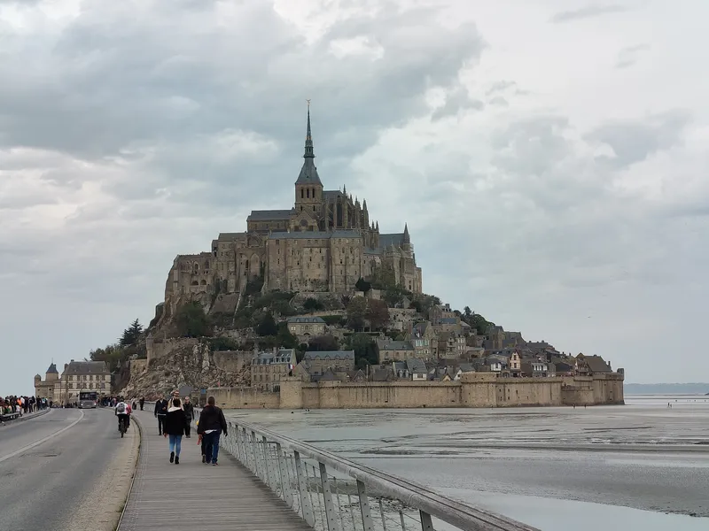
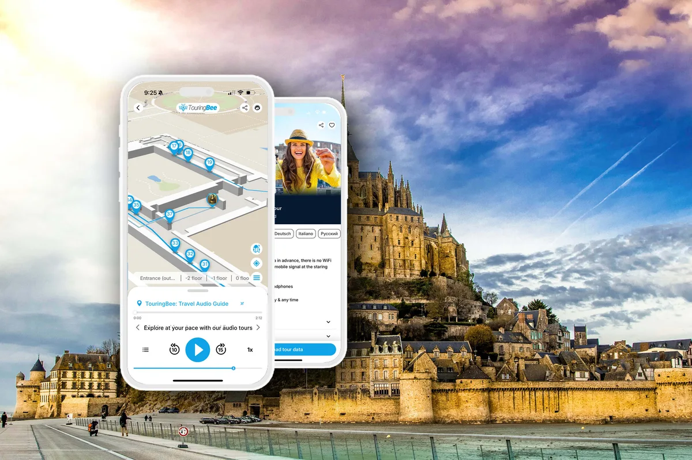

Mont-Saint-Michel looks baffling when you arrive — walls, stairs and lanes stacked up a rock with no obvious logic. It's simpler than it looks. But "just climb the main street and come back" means walking past the best of it: the quiet turns, the corners off the crowd, and the stories that turn a pretty rock into a place you remember.
This page gets you oriented — how the island is laid out, where everything is, and how to reach it from the mainland. And to walk the Mont end to end, in the right order, the self-guided TouringBee island audio guide links it all into one walk and tells you what most visitors walk straight past.
Walk it in the right order
17 stops from the shore to the ramparts, an offline map that works without mobile internet, and a story you start yourself at each spot.
Planning the whole trip? Start with our complete guide to Mont-Saint-Michel.
How the island is laid out: the big picture
Picture the Mont as a spiral. One main street, the Grande Rue, winds up from the town gates to the abbey at the summit, and the ramparts run around the outside with the bay views. Almost everything is on that spiral or a step off it. It's hard to get truly lost: up leads to the abbey, down leads back to the gates.
But the real Mont hides in those steps to the side — and they're the easiest thing to miss if you walk without a route. The crowd carries you straight up the Grande Rue, while the best corners sit around a turn you didn't know was there.
Map: where everything is
This schematic answers "where is what." The order you actually walk it in, and where to slip off the main flow, is the route — and that's the part the audio guide takes care of.
Getting to the island

Your visit begins on the mainland, at the tourist office and visitor car park. From there:
- The free Le Passeur shuttle drops you close to the gates (about 350 m short).
- On foot across the bridge — a flat 2.5 km, 30 to 45 minutes, with the Mont ahead of you the whole way.
Tip: use the free toilets on the mainland before you cross — they're scarce and usually charged on the island. And glance at the Couesnon dam while you're there: it's the piece of engineering that lets the tides scour the sand from around the Mont (more in our tides guide).
What's on the island
In short — what sits where, and why you'd stop:
- The gates — the town entrance, and the main bottleneck of visitors.
- The Grande Rue — the main climb to the abbey and the busiest stretch; old houses, shops and créperies.
- Church of Saint-Pierre — a small parish church just off the main street; easy to walk past.
- The cemetery — a quiet terrace with a view over the bay.
- The abbey — the summit of the route; entry is a separate ticket (all of it in our abbey tickets guide).
- The ramparts & North Tower — the free walk with the widest bay panoramas.
Each of these is worth the stop. The question is what order to take them in, where to turn off the crowd, and what exactly you're looking at — and that's no longer a map, it's a route.
Walking the island without missing things
Here's the honest truth about the Mont: the lanes aren't laid out on a tidy grid, and among hundreds of steps a paper map only gets you so far. You can climb the Grande Rue to the abbey and come back down the same way — most people do — and leave having missed some of the best side-passages and viewpoints.

Mont-Saint-Michel Self-Guided Audio TourInstant access
- 17 stops from the shore to the ramparts, in the right order
- Offline map, GPS & audio — works without mobile internet
- You start each story yourself — go at your own pace
- Several languages · iOS & Android
If you'd rather not just climb to the abbey and back, TouringBee's ready-made route links these places into one walk of 17 stops. It leads you off the main flow where it's worth it, and the offline map shows the next stop. The route covers the town and the ramparts; the abbey interior is a separate ticket.
How long and how hard is the walk?
Be honest with yourself about the climb before you start. The distance inside the walls is tiny — you could cross the whole town in ten minutes if it were flat. But it isn't: it's a continuous rise of cobbles and worn steps from the gate to the abbey terrace, and the abbey interior adds more stairs on top.
Allow about 1.5 to 2 hours for the island itself, and roughly 3 to 4 hours including the abbey and stops. For most people it's manageable at a slow pace with breaks. It's genuinely awkward with a stroller because of the many steps; if a carrier suits your child, it's far more practical. For anyone with reduced mobility the island is only partly accessible. Treat the viewpoints as natural rest stops — and the nice thing with an audio guide is that you set the pace yourself: stop, listen, rest, move on.
Practical tips
- Arrive early. The gates and Grande Rue clog by late morning.
- Wear proper shoes. It's all stairs and worn stone.
- Download the audio guide beforehand: the map, GPS and audio work on the island without mobile internet.
- Time it: about 1.5 to 2 hours for the island, 3 to 4 hours with the abbey.
- Buy the abbey ticket separately and aim for early morning or late afternoon.
Frequently asked questions
How do you get around Mont-Saint-Michel?
On foot. One main street spirals up to the abbey, with the ramparts around the outside. There are no vehicles inside.
Is there a ready-made route for the island?
Yes. TouringBee has a self-guided route of 17 stops through the town and ramparts, with an offline map and audio stories.
How long does it take to walk the island?
About 1.5 to 2 hours for the island itself, and roughly 3 to 4 hours including the abbey and stops.
Do you need a map inside Mont-Saint-Michel?
Yes, mainly to see how the gates, the Grande Rue, the abbey and the ramparts sit relative to each other. The map on this page covers orientation; if you want a step-by-step route, it's built into the audio guide's offline GPS map.
Can you walk from the car park to the island?
Yes, it's a flat 2.5 km (30 to 45 minutes) across the bridge, or take the free shuttle.
Continue exploring
The takeaway
Getting your bearings on the Mont is easy: up to the abbey, down to the gates. The harder part is knowing where to turn off the main street and what exactly you're looking at along the way.
That's what the TouringBee route is for: 17 stops through the town and ramparts, an offline GPS map, and the stories on the spot — which you start yourself. Download it before the trip, pick your hour, and you can simply walk it at your own pace.
Some links on this page are affiliate or product links (TouringBee, Tiqets). If you buy through them we may earn a small commission — at no extra cost to you. It never affects what we recommend. See our Affiliate Disclosure.